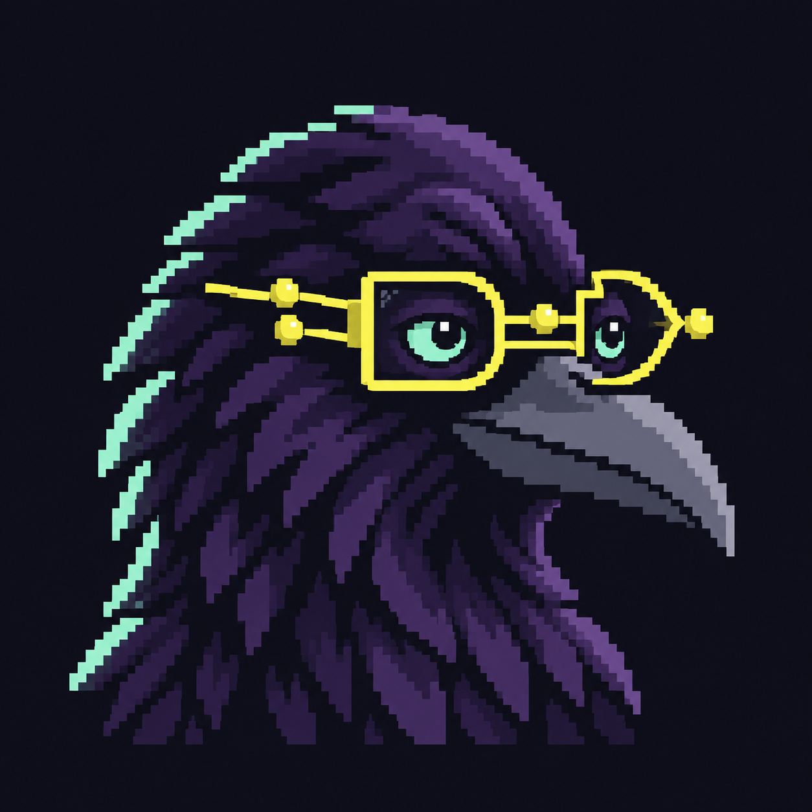

crowbo / favicon
Circuit Frames V3 at actual display sizes. Lemon gate-shaped glasses and the mint feather edge carry the small icon. The browser scales the simplified head artwork.
ON DARK

Circuit Frames V3 at actual display sizes. Lemon gate-shaped glasses and the mint feather edge carry the small icon. The browser scales the simplified head artwork.
